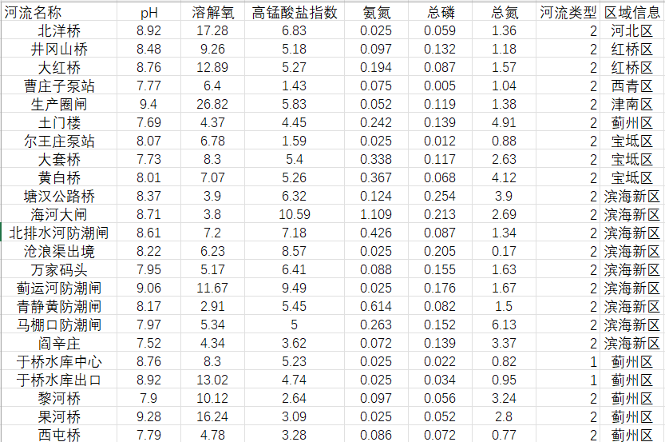

水质指数CWQI的计算
请上传包含水质参数的Excel文件:
原始数据Excel示例
图片转Excel功能
请上传包含水质数据的图片文件:
1.计算依据
依据《城市地表水环境质量排名技术规定(试行)》(环办监测(2017)51号)，对地级及以上城市国家地表水考核断面水环境质量进行排名，具体方法为： 采用《地表水环境质量标准》(GB3838-2002)中除水温、粪大肠菌群和总氮以外的21项指标,计算各湖泊水质综合指数(CWQI),再将湖泊水质综合指数由小到大排序，得出其排名。 2020年12月生态环境部印发了《"十四五"国家地表水监测及评价方案(试行)》,明确"十四五"国家地表水按"9+X"方式进行监测,按"5+X"方式进行评价, 即:pH、溶解氧、高锰酸盐指数、氨氮、总磷等5项基本指标及该断面的"X"特征指标。
(1)基于水质综合指数法的水环境质量排名,依据《城市地表水环境质量排名技术规定(试行)》(环办监测(2017)51号)，对研究区国家地表水考核断面水环境质量进行排名，具体方法为：
计算研究区的水质综合指数(CWQI):
(a)基于河流监测断面的各单项指标浓度的算术平均值和该水质指标地表水Ⅲ类标准限值,计算出单项指标的水质指数。低于检出限的项目,按照 1/2 检出限值参加计算各单项指标浓度的算术平均值。
(b)综合计算出河流的水质指数CWQI河流及湖库水质指数CWQI湖库。
根据各单项指标的CWQI,取其加和值即为河流的CWQI河流。
湖库水质指数(CWQI湖库)计算方法与河流一致。
(c)计算各研究区的水质综合指数(CWQI),再将水质综合指数由小到大排序,得出各区域排名。
(2)根据研究区行政区域内河流和湖库的CWQI,取其加权均值即为该研究区的 CWQI。加权值采用区域的河流断面数和湖库的点位数。若研究区仅有河流断面,无湖库点位，则取河流水质指数为该研究区的水质指数。
《地表水环境质量标准(GB3838-2002)》
2.数据来源
本网站使用的水质数据来自国家水资源局水质监测中心，数据更新频率为每日更新,具体网址为: 国家水质综合自动监管平台
3.联系我们
邮箱：3408732880.@qq.com
地址：天津市西青区津静公路xx号